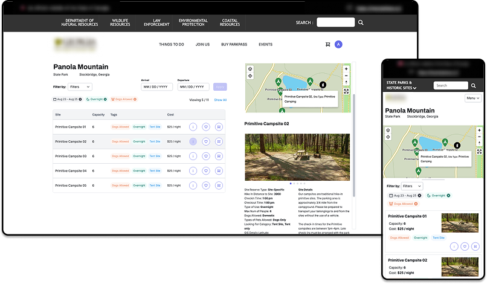
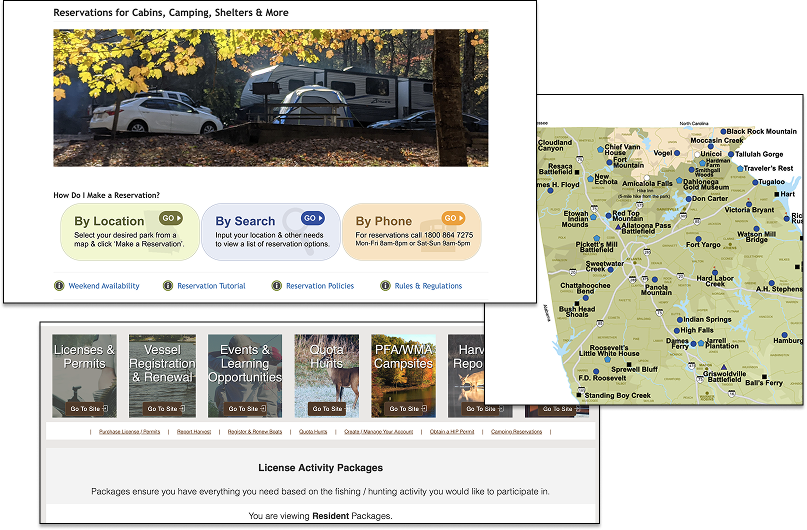
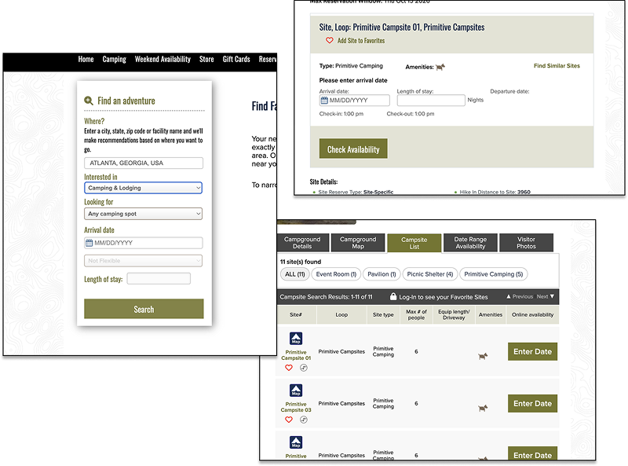
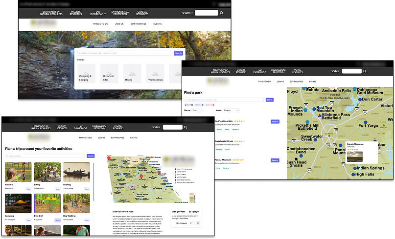
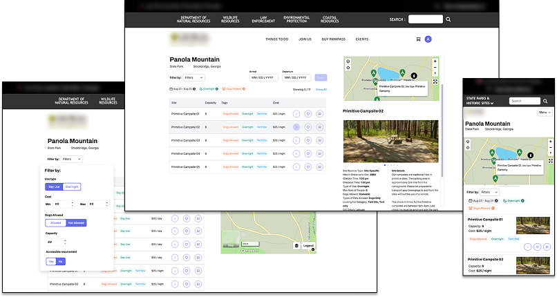
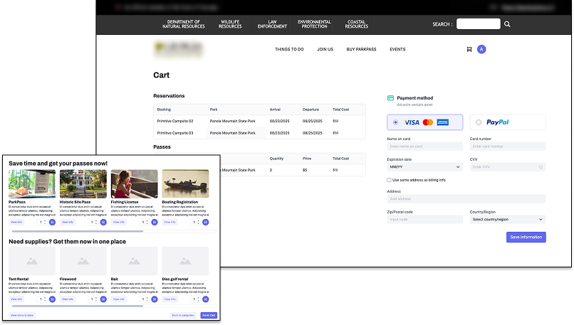

Parks Dept. Concept
- Concept
- Web Design
- UI Design

Overview
This project involved developing a working prototype that brings together several services for a parks department. As the designer on the project, my responsibility encompassed all aspects of the process, including research, design, and prototyping.
Tools
- Visily
- Figma
Roles
- Researcher
- UX Designer
- UI Designer
The Challenge
The challenge of this project was to improve the experience of users accessing department resources through multiple divisions: parks, hunting and fishing, forestry, wildlife conservation. All of which have their own sites, services, and processes. This has created a labyrinth for users to navigate and often requires starting over to add something new.
User Research
User Persona
Michelle
"I feel lost - planning my trip takes too many steps across different sites."
Background
Michelle lives in Atlanta and is planning a family trip for an upcoming weekend. They are new to camping and have never been to a state park before.
Goals
- Reserve a campsite
- Find a spot to take their boat fishing
- Find appropriate activities for young children
- Ensure her oldest child with physical limitations can fully participate
Pains
- The process is confusing, repetitive, and spread across multiple sites
- Difficulty to compare between many variations with details scattered
The Problem
Confusing & Repetitive

Currently, users have to choose between disconnected tools (map, list, or phone) to make a reservation, and the whole process drags across over 15 pages and includes several repetitive tasks. In addition, the map is not interactive, and trying to find a location from the list involves scrolling back and forth to the map. Finally, visiting multiple different sites is required to find services other than the reservation, such as fishing and boating requirements.
Difficult Research

Users find it difficult to compare options and make a choice because campsite details are fragmented across several tabs, photos are buried in the last tab, and search results contain an overwhelming amount of information.
Additionally, users miss out on activities because they are unaware of opportunities or options within the park and are unprepared as they cannot conveniently find supplies once they have arrived at the park.
IDEATION
The Approach
1
Start with the public and design around user journeys, not agency silos
2
Meet people where they are with a digital first and accessible experience
3
Simplify and streamline by reducing friction and duplication across services
4
Future-proof using a modern and scalable platform
The Concept
Unified & Robust Search

First, I designed a unified search prompt for the home page so users could start exploring all the department’s resources from one place simply based on what they are looking for.
Next, I designed more robust search features centered around an interactive map. This would allow users to visibly connect facilities and activities with locations, and identify additional options within a close proximity. This would also make it easy to compare options and view more information without navigating to another page.
Easier Selections

When it comes to booking a campsite, users are able to see all the options at a particular park in one place, with pictures, pricing, and the ability to filter based on availability on a particular date. In addition, the experience was designed to be responsive and mobile-friendly because it is important to users to be able to access resources and make changes to plans while away from a computer once they have begun the trip.
Unified Checkout

Finally, in order to create a more holistic experience for the user, prompts for additional relevant services are incorporated into the booking process and checkout is now consolidated into a single action with a cart for all services and resources.
Results & Impact
The benefits of this redesign concept are numerous. First, visitors would have an improved experience focused on their interests. Parks would experience increased traffic as visitors can more easily find and reserve services. This would also make the experience more competitive with other sites that visitors are familiar with such as hotels or Airbnb. Connected systems would improve services by helping the department better anticipate staffing and procurement needs. Finally, the department would be able to make more data-driven marketing and operational decisions, providing underutilized services with more visibility.